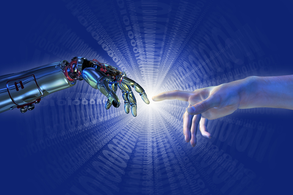

Don’t Cyborgize Me: I Want to Be Human…Just Human!
Mental Things are alone Real; what is Call’d Corporeal, Nobody Knows of its Dwelling Place: it is in Fallacy & its Existence an Imposture. Where is the Existence Out of Mind or Thought? —William Blake
Cyborgs or humans, machines or organisms made of blood and flesh? What are we, and what are we becoming? To what extent have our bodies become reshaped and (re)constructed by the workings of science and technology? Where is the dividing line between a human and a machine, between a body given to us as opposed to a body constructed/crafted for us? These are some of the questions that have invaded our existence in the modern age; these are the questions that control the ways we perceive ourselves in the face of scientific and technological creations. Donna Haraway, in her essay “A Cyborg Manifesto”, contests the idea of new methods of resistance that can challenge, and eventually defeat the domination of science and technology, as well as the existing social and political systems. Haraway poses a very interesting, perhaps even somewhat frightening solution to this domination—that we all should embrace the identity of a cyborg, which she defines as “a hybrid of machine and organism, a creature of social reality as well as a creature of fiction”; cyborgs are “creatures simultaneously animal and machine, who populate world ambiguously natural and crafted” (Symians, Cyborgs and Women: The Reinvention of Nature, p. 149). One thing that comes to my mind is how we have come to construct this binary, since machine and organism spring not from the same source necessarily. We live in a world of binaries, where everything we picture or imagine needs to be contrasted to its opposite(s); where all of our work and the things we produce are compared to the work of others, where everything is judged based upon how good or bad it looks and functions. As humans, we contain the binaries of good and evil, which to a great extent impacts our thought processes and our actions. A cyborg is a combination of binaries joined together to create a functioning product; but whereas a machine is created by humans only, an organism can also be created by humans, but it can also be created by the divine. When it comes to the creation of a cyborg, there is no intervention of the divine; the divine is undermined and completely pushed from this creation, for a cyborg is a creature supposed to benefit and improve the corporeal, but not the spiritual. In the world as it is today, we are slowly assuming the identity of a cyborg, since technology, wars, and capitalism have come to rule and control the way we think, see, and construct images of the world around us. We are led into a belief that breaking boundaries between humans and animals, or that creating more technological products will benefit our minds and bodies. We think that we now live in an age of progress, and that brighter and more advanced future is awaiting us. We think that the way we live now is better than the way humans used to live a hundred, two hundred, or a thousand years ago. The simple truth is that instead of progressing towards a brighter and happier future, we are progressing in one way only: destruction.
When I say destruction, I mean destruction of nature, the planet we inhabit, of all the living species on the planet, but most importantly, the destruction of human productivity and intelligence. We have become dependent on capitalism and technology to such an extent that the products we create are turned into subjects, which makes us, humans, into non-thinking and non-acting objects. How many of us would be able to completely renounce their cellphones, computers, or cars? Not many, I am sure. If all the technology miraculously died tomorrow, the world would experience a total collapse, and the majority of us would not even be able to perform the simplest tasks possible. One thing we do not seem to realize as much is the fact that if it was not for the technology humans created, and the capitalist system we brought upon ourselves, we would not even need to look for the ways of improving our bodies. Just think of it: what good has technology brought upon human race, except for more diseases, physical and mental injuries, toxic food, water, air, and hazardous and radioactive environments? The main reason for the growing number of people with cancer is the toxic waste and chemicals we are constantly dumping into the air and water. But the saddest thing of all is that regardless of how destructive and lethal technology can be, we still need it to survive. If all the machines we produced suddenly stopped working, how would we get supplies of purified water, how would we treat the diseases we have already developed, how would we produce tools, clothes, furniture, how would we travel between different cities, countries, and continents, how would we have access to knowledge, and the world events when everything now is practically run by computers?

Humans or Machines: Who is going to outlive the other?
If it was not for the machines, if we suddenly decided to put an end to all the machines, not only would our access to information and knowledge become undermined, but our ability to act, move, and interact through our bodies—the ability to use our bodies as physical and psychological nutrients—would become totally negated. As Haraway denotes: “Our machines are disturbingly lively, and we ourselves frighteningly inert” (152). The most disturbing and frightening thing of all is that the death of machines would bring about an even faster-paced death of our own bodies. Just look to the majority of world’s population today, especially the people living in towns bordering bigger cities. Even if the grocery store is 10 minutes away on foot, most of us will opt for the car, because we cannot allow ourselves to lose 5-6 minutes of our “precious” time, generally spent gazing into a TV or computer screen. We do not even realize the extent to which our minds have become colonized by the oppressive claws of the late capitalist and technological age. Governmental systems, but even more than that, big corporations are running our lives, making us believe that access to unlimited amount of irrelevant information, such as fashion, sports events, new make-up products, the opening or closing of a shopping center, the lives of rich and popular people, is exactly what we need. Why would we care about, or even try to fix problems in our lives and our own environment, when we are constantly distracted by the news of how other people dress, where they live, what their lives really look like, and so on. Many of us think that by not smoking, not using a car or littering, we are protecting the natural environment, but how many of us would actually organize a campaign to clean the town or our neighborhood from all the garbage? Not many, I am sure. What happens in the end is that a very few individuals, or even one person only, work together to help create environments that are more livable for the living beings. These few individuals become the silent and unacknowledged saviours of their own communities, but also the world itself.
The need to despair for a lost (or stolen) technological gadget does not come as such a rarity or oddity any longer. Namely, the need to wail after a broken or lost piece of machine is becoming increasingly stronger than a need to mourn the loss of a friendship or memory. On a number of occasions, I have witnessed the people being in an indescribably disturbing and depressing state after a loss of a gadget, which clearly testifies to our dependence on technology. On the other hand, I have seen (in many people) less intense feelings of despair after, let’s say, the loss of a family photograph. I know that some of us might have more value for the phone numbers we had stored in our cell phones, but, to what extent? Is not the irretrievable moment captured at a given time or place more valuable than a simple piece of plastic and metal? Does technology really help us in any way? Does it make us feel more connected to the people around us? Does it make us interact with each other better? If the reasons for which we use technology are limited mainly to talking to other people in a virtual environment, or even writing on an intangible surface, without ever getting that direct contact with the people and objects around us, then technology becomes an unnecessary impediment to our lives. For thousands and thousands of years, civilizations functioned perfectly without technology, laying foundations to science, mathematics, literature, art, philosophy, architecture, and many other areas. Modern civilization has been living with the stigma of burdensome inferiority, due to its inability to explain the greatest mysteries of all: “How did the ancient civilizations manage to build societies and cultures without the help of technology?” Perhaps the answer to that mystery lies exactly in the non-existence of technology!
Modern human beings cannot conceive of life without technology, simply because of a constant exposure to it. Most kids today are raised through video games, cell phones, and social networking sites, such as Twitter and Facebook. Even when we try to focus on doing one thing, which does not involve using a technological device (such as writing a paper or a book, reading a book, or painting) we cannot escape from all the distractions around us. The buzzing sounds of a cell phone, tablet, or TV, create an environment in which our brains are programmed to interrupt the respective task, repeatedly, and to engage in something entirely different. The reason why we find it puzzling to understand how one person only could translate the entire philosophical writings of Greek and Roman philosophers centuries ago (let’s take, for example, Thomas Taylor’s translations which date back to the eighteenth century), is because no modern human being is capable of translating such an overwhelming amount of pages (tens of thousands of pages) during their lifetime. This is not because humans are intellectually incapable of completing highly demanding tasks. On the contrary, human beings have the capacity to possess admirable acuity and expertise in a number of fields. The problem with the modern human is that he/she relies heavily on the capacity of machines, instead of the capacities of their own bodies and the intellect. So long as we continue to be subservient to the machines, we will never be able to release our human potentials and apply them for the benefit of our environments and humankind. While technology itself is undeniably helpful in many ways, it is not, however, an indispensable accessory for humans. The only reason why modern humans see technology as a great necessity is because we have reduced our own identities and every single action we perform to a commodity that is transferred and manifested through technology, through a world in which an identity can be assumed, altered, and erased, over and over again.